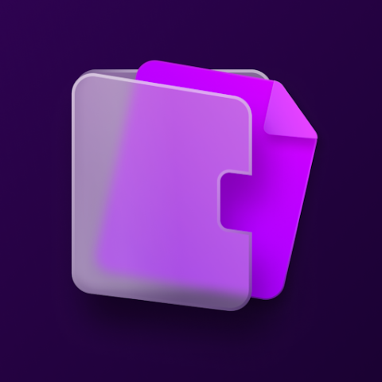

Логотипы российских банков
SVG и PNG логотипы крупнейших банков России — Сбер, Т-Банк, Альфа-Банк, ВТБ и другие. Скачивайте бесплатно, меняйте цвета и экспортируйте в Figma.

WB БанкЧастые вопросы
Сколько логотипов в подборке «Логотипы российских банков»?
В подборке «Логотипы российских банков» собрано 16 логотипов в форматах SVG и PNG. Каждый можно скачать бесплатно и открыть в редакторе цвета.
Можно ли использовать эти логотипы бесплатно?
Да, все логотипы доступны для скачивания бесплатно и без регистрации. Учитывайте, что бренды могут быть защищены авторским правом их владельцев — соблюдайте правила использования бренда.
В каком формате скачать логотипы?
Большинство логотипов доступны в векторном SVG (масштабируется без потери качества) и в PNG. Можно изменить цвета онлайн и экспортировать в Figma.
331+ логотипов в каталоге
SVG, PNG, редактор цвета, экспорт в Figma
Открыть каталог